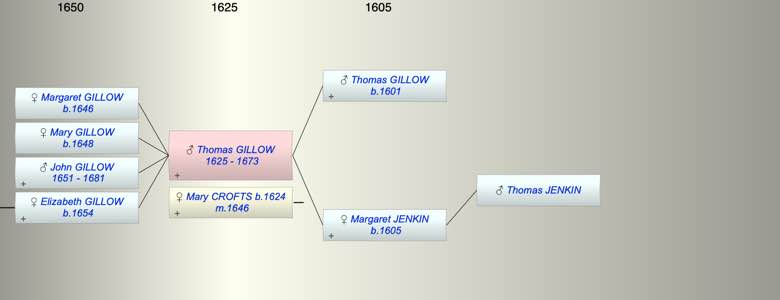

| [Index] |
| Thomas GILLOW (1625 - 1673) |
|  |
| b. 1625 |
| m. 22 May 1646 Mary CROFTS (1624 - ) at St Mary Bredin, Canterbury |
| d. 23 Nov 1673 aged 48 |
| Parents: |
| Thomas GILLOW (1601 - ) |
| Margaret JENKIN (1605 - ) |
| Children (4): |
| Margaret GILLOW (1646 - ) |
| Mary GILLOW (1648 - ) |
| John GILLOW (1651 - 1681) |
| Elizabeth GILLOW (1654 - ) |
| Grandchildren (1): |
| Mercy LONG (1673 - 1765) |
| Events in Thomas GILLOW (1625 - 1673)'s life | |||||
| Date | Age | Event | Place | Notes | Src |
| 1625 | Thomas GILLOW was born | Note 1 | |||
| 1646 | 21 | Birth of daughter Margaret GILLOW | Walmer | Note 2 | |
| 22 May 1646 | 21 | Married Mary CROFTS (aged 22) | St Mary Bredin, Canterbury | Note 3 | |
| 1648 | 23 | Birth of daughter Mary GILLOW | Walmer | Note 4 | |
| 1651 | 26 | Birth of son John GILLOW | Walmer | Note 5 | |
| 1654 | 29 | Birth of daughter Elizabeth GILLOW | Walmer | Note 6 | |
| 23 Nov 1673 | 48 | Thomas GILLOW died | Note 7 | ||
| Personal Notes: |
| The probate inventory PRC11/36/107 to Thomas Gillow of St Laurence applies here. |
| Created on a Mac™ using iFamily for Mac™ on 8 Oct 2023 |